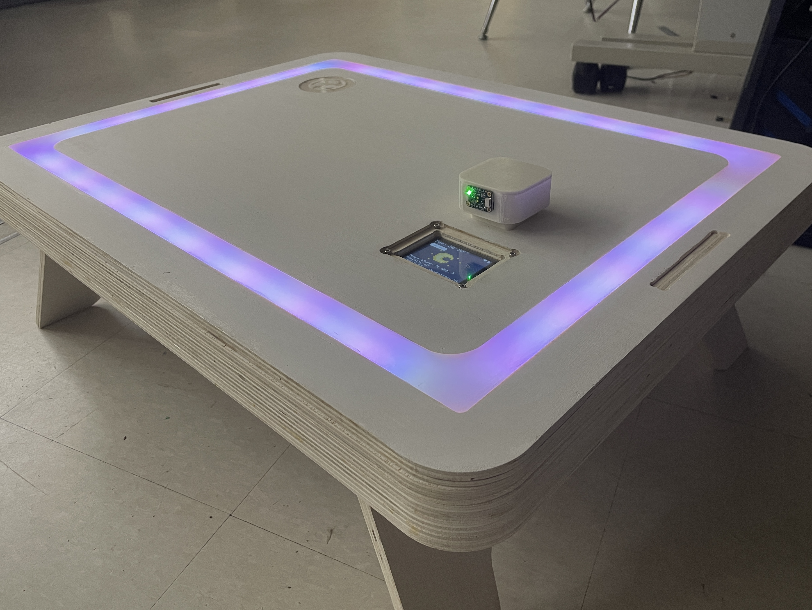
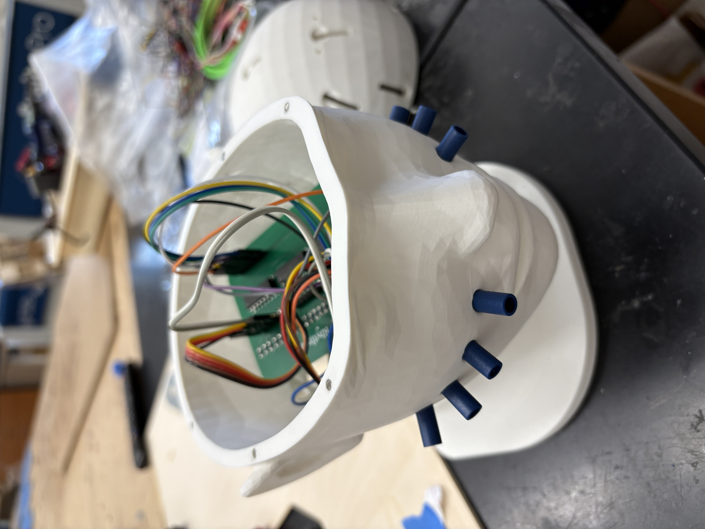
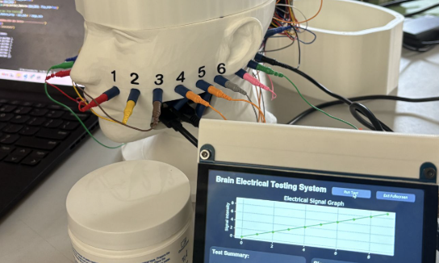

hey, i'm angelina!
I love designing end-to-end, human-centric designs. At the moment, I am studying EECS and BME @ MIT (6-5 + 20). I'm passionate about designing wearable tech, product design, and brain-computer interfaces.
things i've built

the PomoDesk · Fab Academy

overthinker
or overtinker?
I was born and raised in Charlotte, and I am now an MIT student, graduating class of 2030.
I love bringing form and function together to design aesthetically efficient systems that can address real world problems.
I first learned how to build in my freshman year of highschool engineering and design method.
Since then, I've grown to love the design process and integrating art and engineering.

things i've been up to
current fixations
Presently developing an sEMG-ML detection + alert wearable for epileptic tonic-clonic seizure activity to target sudden unexpected death in epilepsy (SUDEP)
Wearables · Machine Learning · Embedded Systems
Presently co-producing a series of magnetic, modular, and musical circuit blocks for collaborative play
Modularity · PCB Design
previous quests
Co-fabricated a temperature-monitoring sleeve for nerve conduction studies patients, with PID-controlled heating and live data collection
Wearable · E-Textiles · Embedded Systems
Co-engineered a 21-channel EEG electrode testbed and stacked neural network ensemble to diagnose electrode abnormalities
Quality Assurance Testing · Machine Learning · Embedded Systems
Devised and fabricated the PomoDesk, a smart pomodoro-integrated workspace with a gamified UI for neurodivergent students
Rapid Prototyping · Woodworking · Embedded Systems